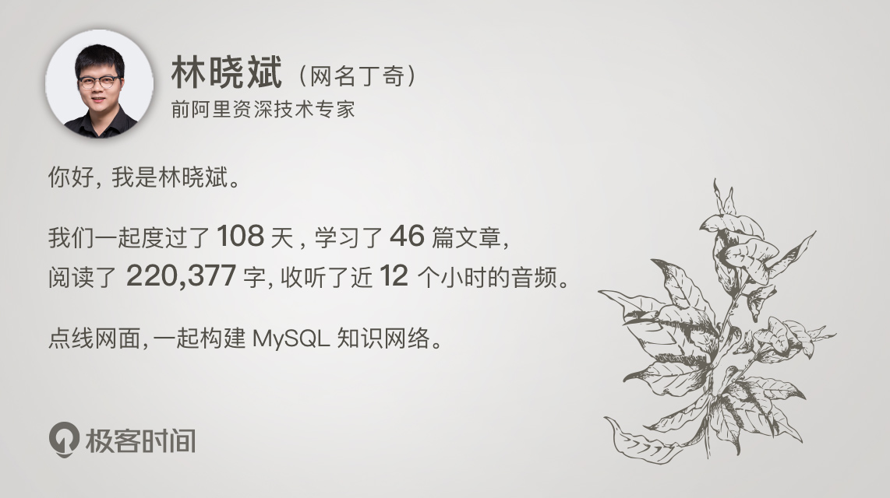

结束语 | 点线网面，一起构建MySQL知识网络
2019-02-27 林晓斌

时光流逝，这是专栏的最后一篇文章。回顾整个过程，如果用一个词来描述，就是“没料到”：
我没料到文章这么难写，似乎每一篇文章都要用尽所学；
我没料到评论这么精彩，以致于我花在评论区的时间并不比正文少；
我没料到收获这么大，每一次被评论区的提问问到盲点，都会带着久违的兴奋去分析代码。
如果让我自己评价这个专栏：
我最满意的部分，是每一篇文章都带上了实践案例，也尽量讲清楚了原理；
我最得意的段落，是在讲事务隔离级别的时候，把文章重写到第三遍，终于能够写上“到这里，我们把一致性读、当前读和行锁就串起来了”；
我最开心的时候，是看到评论区有同学在回答课后思考题时，准确地用上了之前文章介绍的知识点。因为我理解的构建知识网络，就是这么从点到线，从线到网，从网到面的过程，很欣喜能跟大家一起走过这个过程。
当然，我更看重的还是你的评价。所以，当我看到你们在评论区和知乎说“好”的时候，就只会更细致地设计文章内容和课后思考题。
同时，我知道专栏的订阅用户中，有刚刚接触 MySQL 的新人，也有使用 MySQL 多年的同学。所以，我始终都在告诫自己，要尽量让大家都能有所收获。
在我的理解里，介绍数据库的文章需要有操作性，每一个操作有相应的原理，每一个原理背后又有它的原理，这是一个链条。能够讲清楚链条中的一个环节，就可能是一篇好文章。但是，每一层都有不同的受众。所以，我给这 45 篇文章定的目标就是：讲清楚操作和第一层的原理，并适当触及第二层原理。希望这样的设计不会让你觉得太浅。
有同学在问 MySQL 的学习路径，我在这里就和你谈谈我的理解。
1. 路径千万条，实践第一条
如果你问一个 DBA“理解得最深刻的知识点”，他很可能告诉你是他踩得最深的那个坑。由此，“实践”的重要性可见一斑。
以前我带新人的时候，第一步就是要求他们手动搭建一套主备复制结构。并且，平时碰到问题的时候，我要求要动手复现。
从专栏评论区的留言可以看出来，有不少同学在跟着专栏中的案例做实验，我觉得这是个非常好的习惯，希望你能继续坚持下去。在阅读其他技术文章、图书的时候，也是同样的道理。如果你觉得自己理解了一个知识点，也一定要尝试设计一个例子来验证它。
同时，在设计案例的时候，我建议你也设计一个对照的反例，从而达到知识融汇贯通的目的。就像我在写这个专栏的过程中，就感觉自己也涨了不少知识，主要就得益于给文章设计案例的过程。
2. 原理说不清，双手白费劲
不论是先实践再搞清楚原理去解释，还是先明白原理再通过实践去验证，都不失为一种好的学习方法，因人而异。但是，怎么证明自己是不是真的把原理弄清楚了呢？答案是说出来、写出来。
如果有人请教你某个知识点，那真是太好了，一定要跟他讲明白。不要觉得这是在浪费时间。因为这样做，一来可以帮你验证自己确实搞懂了这个知识点；二来可以提升自己的技术表达能力，毕竟你终究要面临和这样的三类人讲清楚原理的情况，即：老板、晋升答辩的评委、新工作的面试官。
我在带新人的时候，如果这一届的新人不止一个，就会让他们组成学习小组，并定期给他们出一个已经有确定答案的问题。大家分头去研究，之后在小组内进行讨论。如果你能碰到愿意跟你结成学习小组的同学，一定要好好珍惜。
而“写出来”又是一个更高的境界。因为，你在写的过程中，就会发现这个“明白”很可能只是一个假象。所以，在专栏下面写下自己对本章知识点的理解，也是一个不错的夯实学习成果的方法。
3. 知识没体系，转身就忘记
把知识点“写下来”，还有一个好处，就是你会发现这个知识点的关联知识点。深究下去，点就连成线，然后再跟别的线找交叉。
比如，我们专栏里面讲到对临时表的操作不记录日志，然后你就可以给自己一个问题，这会不会导致备库同步出错？再比如，了解了临时表在不同的 binlog 格式下的行为，再追问一句，如果创建表的时候是 statement 格式，之后再修改为 row 格式（或者反之），会怎么样呢？
把这些都搞明白以后，你就能够把临时表、日志格式、同步机制，甚至于事务机制都连起来了。
相信你和我一样，在学习过程中最喜欢的就是这种交叉的瞬间。交叉多了，就形成了网络。而有了网络以后，吸收新知识的速度就很快了。
比如，如果你对事务隔离级别弄得很清楚了，在看到第 45 篇文章讲的 max_trx_id 超限会导致持续脏读的时候，相信你理解起来就很容易了。
4. 手册补全面，案例扫盲点
有同学还问我，要不要一开始就看手册？我的建议是不要。看手册的时机，应该是你的知识网络构建得差不多的时候。
那你可能会问，什么时候算是差不多呢？其实，这没有一个固定的标准。但是，有一些基本实践可以帮你去做一个检验。
- 能否解释清楚错误日志（error log）、慢查询日志（slow log）中每一行的意思？
- 能否快速评估出一个表结构或者一条 SQL 语句，设计得是否合理？
- 能否通过 explain 的结果，来“脑补”整个执行过程（我们已经在专栏中练习几次了）？
- 到网络上找 MySQL 的实践建议，对于每一条做一次分析：
- 如果觉得不合理，能否给出自己的意见？
- 如果觉得合理，能否给出自己的解释？
那，怎么判断自己的意见或者解释对不对呢？最快速、有效的途径，就是找有经验的人讨论。比如说，留言到我们专栏的相关文章的评论区，就是一个可行的方法。
这些实践做完后，你就应该对自己比较有信心了。这时候，你可以再去看手册，把知识网络中的盲点补全，进而形成面。而补全的方法就是前两点了，理论加实践。
我希望这 45 篇文章，可以在你构建 MySQL 知识体系的过程中，起到一个加速器的作用。
我特意安排在最后一篇文章，和你介绍 MySQL 里各种自增 id 达到定义的上限以后的不同行为。“45”就是我们这个专栏的 id 上限，而这一篇结束语，便是超过上限后的第一个值。这是一个未定义的值，由你来定义：
- 有的同学可能会像表定义的自增 id 一样，就让它定格在这里；
- 有的同学可能会像 row_id 一样，二刷，然后用新的、更全面的理解去替代之前的理解；
- 也许最多的情况是会像 thread_id 一样，将已经彻底掌握的文章标记起来，专门刷那些之前看过、但是已经印象模糊的文章。
不论是哪一种策略，只要这 45 篇文章中，有那么几个知识点，像 Xid 或者 InnoDB trx_id 一样，持久化到了你的知识网络里，你和我在这里花费的时间，就是“极客”的时间，就值了。
这是专栏的最后一篇文章的最后一句话，江湖再见。